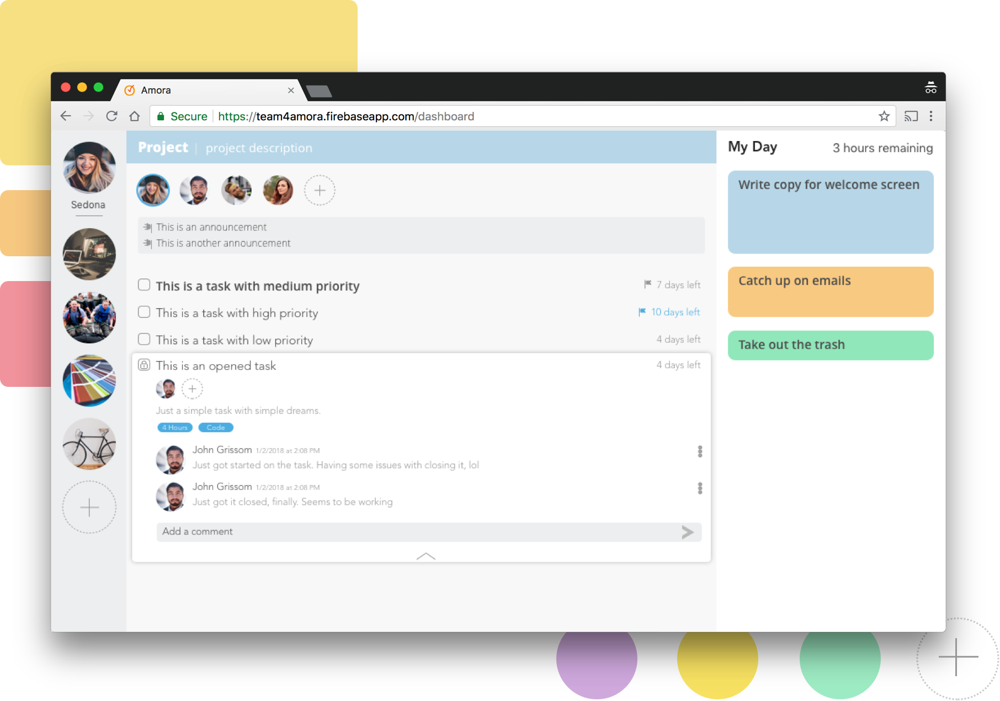

Amora
Keeping Teams Organized
I believe that working in groups and collaborating with others is an important aspect of creating your best work. Brainstorming, utilizing every person’s individual strengths, and coming together as a team to complete challenging work always leads to better results. That being said, working in a team involves a lot of overhead. How do you ensure everybody is on the same page? How do you divide the work in a way that everybody understands what they need to work on? Can we create a platform that ensures people are working towards the team’s goals without adding overhead?
Collaborating with a group of five other CS majors, I worked on a mobile web application that tackled these issues. From conception to production, I partnered with the team’s PM, front-end developer, and back-end developers to create this platform for our CS 307: Software Engineering Class. I delivered wireframes, visual mockups, prototypes, and worked with the front-end team to ensure design specifications were being met. We worked through 3 individual, month-long sprints to create our final project.
Check it out at team4amora.firebaseapp.org
in this case study
I. Approaching the problem: how do we facilitate group work without adding complexity?
II. Exploring the solutions: be a robust app when users need it, otherwise assume simplicity
III. Finding the balance: when to assume information, and when to ask
IV. Problems we faced: working with developers to ensure a shared vision of beneficial user experiences
Team
Product & Engineering: 1 PM, 1 Front-End Developer,
3 Back-End Developers
Design: Me
MY ROLES
UI/UX Design, Interaction Design, Front-End Development
Tools
Sketch, Affinity Designer, React.js, Atom
Timeline
January-May, 2018
I) Approaching the Problem
How do we facilitate group work without adding complexity?
We decided to work on this project because courses and clubs require continuous group collaboration, yet nobody on the team had found a service or platform that worked for a team collaboration. Trello, Asana, and Wunderlist are unnecessarily complex, Things and Reminders don’t allow for team collaboration, and generally, no apps allow users to plan their day with meetings and tasks, nonetheless allow other group members to easily view those calendars for meeting scheduling.
To develop our solutions, our group had numerous whiteboarding and brainstorming sessions to develop an extensive list of possible ideas. We then talked with our TA’s, friends, and other groups to learn about their grievances, annoyances, and desires for a truly collaborative task tracking application. We used this data to refine our features and overall application to what we considered to be the most important features:
* Separate ‘lists’ into ‘projects’ - Each project is a unique, individual group with any number of people. This allows groups to divide the work accordingly and only add members who need to be added, while also allowing for individual projects
* Show the most important information for each task by default; show expanded, detailed information after expanding the task
* Integrate a “My Day” section that synchronizes with a user’s calendar. This allows users to plan when they want to work on certain tasks in their schedule
* Create user profiles. These can display when a user’s icon is clicked, and displays a user’s name, current status, and their schedule for the day.
* Add sorting and filtering mechanisms that sort tasks; sort tasks by order of importance/deadline by default, but include options of chronological, by deadline, or by category
* Have roles. We found from our user testing that having a managerial position is important; it allows management to customize the projects to the liking, and to what works best for their team.
* Lock tasks. Users, specifically those in a managerial or supervisory position, would like the option lock tasks. This notifies them